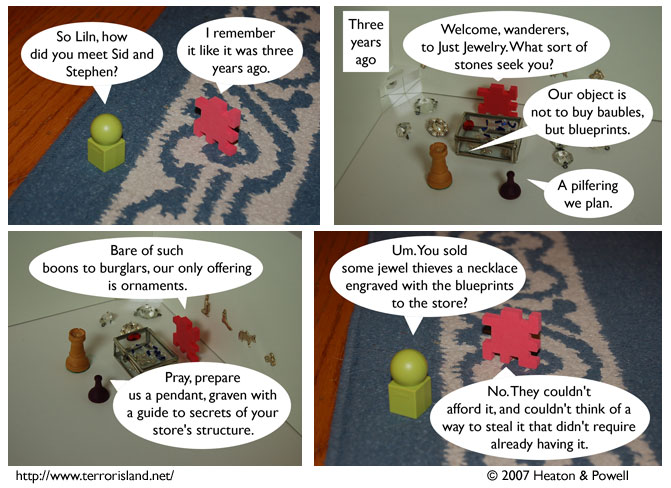

Strip #148
— Wednesday, May 23, 2007
The store isn’t really called Just Jewelry. It only becomes alliterative during flashbacks.
Notes, Thoughts, &c.
Ben’s Notes
This strip is dedicated to all the fans who’ve been bugging me to tell them about how Sid and Stephen used to be jewel thieves. And to everyone who was wondering when we’d get around to showing Liln’s jewelry store in the strip.
Lewis’s Notes
These comments are crafted with a riddle in mind. The first person to solve the riddle wins a prize. Can you solve it?